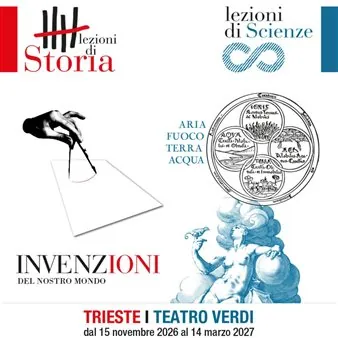

da dom 15 nov a dom 20 dic
Lezioni di Storia e Scienza - Invenzioni del nostro mondo. Aria, fuoco, terra, acqua
Se è vero che ogni avvenimento storico è per forza concatenato a fatti precedenti secondo il naturale sviluppo del nostro agire quotidiano, è innegabile che in certi momenti si manifestino degli scarti ‘fuori scala’: rivoluzioni, grandi scoperte, ma anche eventi apparentemente…
 Indicazioni
Indicazioni
- Costi e prenotazioni
- Costo non indicato · Prenotazione non indicata
- Programma
- Programma da verificare. Apri la fonte ufficiale per orari e possibili aggiornamenti.
- In caso di maltempo
- Nessuna indicazione specifica pubblicata.
- Note
- Acquisito automaticamente dalla fonte.
L’EVENTO
Descrizione completa
Se è vero che ogni avvenimento storico è per forza concatenato a fatti precedenti secondo il naturale sviluppo del nostro agire quotidiano, è innegabile che in certi momenti si manifestino degli scarti ‘fuori scala’: rivoluzioni, grandi scoperte, ma anche eventi apparentemente minori, ideali o semplici tendenze.
Invenzioni del nostro mondo , il nuovo ciclo di Lezioni di Storia in partenza al Teatro Verdi di Trieste, è dedicato proprio a quei momenti che, rispetto al passato, presentano elementi di novità tali da potersi utilizzare la categoria di ‘invenzione’.
Programma
15 novembre 2026, ore 11.00 - Alberto M. Banti – La Nazione - Nel biennio 1848-1849 l’Europa è attraversata da rivolgimenti che coinvolgono i territori delle potenze fino ad allora garanti della Restaurazione. Molte città sono teatro di avvenimenti inaspettati: manifestazioni politiche, insurrezioni, violente repressioni… È una nuova Europa, un’Europa di popoli che decidono del loro destino, di nazioni che si affermano e conquistano la loro indipendenza. Grandi speranze si stagliano all’orizzonte, ma brucianti delusioni spazzeranno presto gran parte di quei sogni.
Alberto Mario Banti insegna Storia contemporanea e Storia culturale all’Università di Pisa. 29 novembre 2026, ore 11.00 - Laura Pepe – Le Olimpiadi moderne - Il 1896 è una data storica per lo sport: Pierre de Coubertin riporta in vita le Olimpiadi, a millecinquecento anni di distanza dalla loro eclisse. Il progetto di far rivivere gli antichi giochi, tuttavia, viene piegato e strumentalizzato a esigenze storiche contingenti e ai nostri occhi ben poco nobili. Non a caso, le prime olimpiadi moderne di successo furono quelle di Berlino del 1936, in cui le competizioni furono assunte a strumento di propaganda del Terzo Reich e della sua idea di stato razzista ed eugenetico.
Laura Pepe insegna Istituzioni di diritto romano e Diritto greco antico all’Università degli Studi di Milano. 20 dicembre 2026, ore 11.00 - Marcello Flores – I totalitarismi - I totalitarismi sono i regimi dittatoriali di massa che emergono tra le due guerre in Italia, Unione Sovietica, Germania. È ancora acceso il dibattito per definire cosa sono e quali sono i regimi totalitari, ma l’uso della parola risale a Giovanni Amendola, che se ne servì il 2 novembre 1923 per classificare il regime fascista. L’intreccio tra una dura repressione e la ricerca del consenso e dell’appoggio da parte delle masse popolari caratterizza la novità – moderna – del totalitarismo rispetto alle tradizionali dittature.
Marcello Flores ha insegnato Storia contemporanea nelle Università di Trieste e di Siena.
Questa edizione dell’iniziativa è l’occasione per ricordare Giorgio Rossi, l’Assessore alla Cultura da poco scomparso. Negli ultimi anni, la sua convinta e attiva partecipazione è stata determinante per l’organizzazione e la riuscita dei programmi. Incluso quello che inizierà a breve.
Le Lezioni sono introdotte da giornalisti de “Il Piccolo”.
Ingresso libero fino ad esaurimento posti. Le lezioni potranno essere seguite anche in diretta streaming sul canale YouTube del Comune di Trieste e sul sito de “Il Piccolo”.
IL PROGRAMMA
Programma e orari
Appuntamenti raccolti dalle fonti elencate. Dove manca un orario, non è ancora disponibile in questa scheda.
Programma pubblicato
- Dal 2026-11-15 al 2026-12-20
INFORMAZIONI UTILI
Prima di partire
- Controllare la fonte prima di partire.
ORGANIZZAZIONE